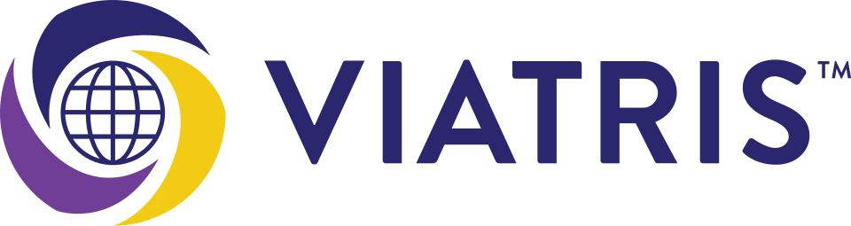
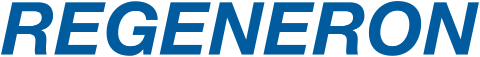
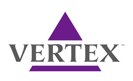
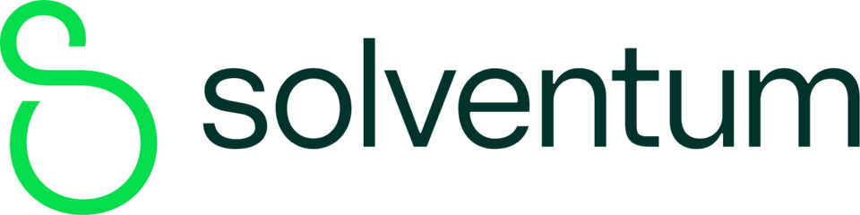
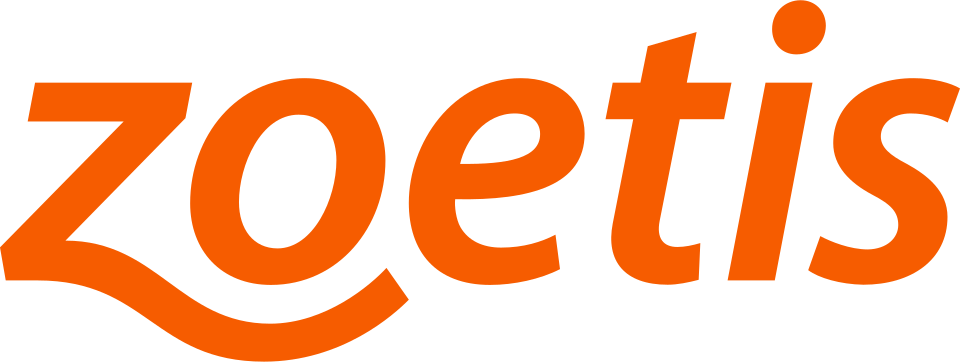

헬스·제약 브랜드 95
헬스케어와 제약 브랜드가 신뢰, 효능, 생활 습관을 어떻게 구축했는지 정리합니다. 브랜드 아틀라스에 수록된 헬스·제약 브랜드 95개를 로고와 함께 모았습니다. 각 항목은 설립 배경, 브랜드 아이덴티티, 로고 변천, 제품과 서비스, 현재 상태를 정리한 상세 페이지로 이어집니다.
다른 산업 보기
기원 국가가 확인된 브랜드는 79개이며 미국 59개, 한국 15개, 터키 1개, 영국 1개, 독일 1개 순으로 많습니다. 설립연도가 확인된 브랜드는 75개이며 가장 오래된 곳은 1833년, 가장 최근은 2024년에 시작했습니다. 시기별로는 1900년 이전 10개, 1900~1949년 11개, 1950~1999년 38개, 2000년 이후 16개입니다. 수록 자료로는 로고 이미지 82개, 로고 변천 자료 1개, 연혁 타임라인 19개를 갖췄습니다. 이 가운데 77개는 공식 웹사이트가 일치하는 위키데이터 개체로 연결해 두었습니다.
헬스·제약 브랜드 목록
품질 점수 순 상위는 로고 타일로, 나머지는 가나다순 목록으로 보입니다.
 아스피린Aspirin1899년
아스피린Aspirin1899년아스피린(Aspirin)은 1899년 독일 바이엘(Bayer)이 아세틸살리실산을 상표명으로 출시한 진통·해열·소염제다.
 유한양행Yuhan Corporation한국 · 1926년
유한양행Yuhan Corporation한국 · 1926년유한양행(Yuhan Corporation)은 1926년 유일한이 설립한 한국의 대표 장수 제약 기업이다.
 종근당Chong Kun Dang한국 · 1941년
종근당Chong Kun Dang한국 · 1941년종근당(Chong Kun Dang)은 1941년 창업한 한국의 대형 제약 기업이다.
 광동제약Kwangdong Pharmaceutical한국 · 1963년
광동제약Kwangdong Pharmaceutical한국 · 1963년광동제약(Kwangdong Pharmaceutical)은 1963년 창업한 한국의 제약·음료 기업으로, 비타500과 옥수수수염차로 유명하다.
 대웅제약Daewoong Pharmaceutical한국 · 1978년
대웅제약Daewoong Pharmaceutical한국 · 1978년대웅제약(Daewoong Pharmaceutical)은 우루사·나보타 등을 보유한 한국의 종합 제약회사다.
 SK바이오팜SK Biopharmaceuticals한국
SK바이오팜SK Biopharmaceuticals한국SK바이오팜(SK Biopharmaceuticals)은 SK그룹 산하의 중추신경계 신약개발 전문 바이오 기업이다.
 동아에스티Dong-A ST2013년
동아에스티Dong-A ST2013년동아에스티(Dong-A ST)는 동아쏘시오그룹 산하의 전문의약품·바이오 전문 제약회사다.
 프레임워크Framework미국 · 2019년
프레임워크Framework미국 · 2019년프레임워크는 2019년 미국에서 설립된 모듈형 노트북 제조 기업으로, 사용자가 직접 부품을 교체하고 업그레이드할 수 있는 수리 가능한 컴퓨터를…
 미국 질병통제예방센터United States Centers for Disease Control and Prevention미국
미국 질병통제예방센터United States Centers for Disease Control and Prevention미국미국 질병통제예방센터(United States Centers for Disease Control and Prevention)는 미국의 연방…
 브리스톨 마이어스 스퀴브Bristol-Myers Squibb미국 · 1989년
브리스톨 마이어스 스퀴브Bristol-Myers Squibb미국 · 1989년브리스톨 마이어스 스퀴브(Bristol-Myers Squibb)는 미국의 다국적 제약회사이다.
 휴젤Hugel한국
휴젤Hugel한국휴젤(Hugel)은 보툴리눔 톡신 보툴렉스(레티보)를 보유한 한국의 미용 의료 바이오 기업이다.
 백스터Baxter International미국 · 1931년
백스터Baxter International미국 · 1931년백스터(Baxter International)는 미국 일리노이주 Deerfield에 본사를 둔 다국적 헬스케어 기업이다.

비아트리스Viatris미국 · 2020년비아트리스(Viatris)는 브랜드 의약품, 제네릭, 바이오시밀러와 일반의약품 등을 생산·판매하는 미국의 글로벌 제약·헬스케어 기업이다.
 암젠Amgen미국 · 1980년
암젠Amgen미국 · 1980년암젠(Amgen)은 미국 캘리포니아주 사우전드오크스에 본사를 둔 다국적 바이오제약 회사이다.
 애브비AbbVie미국 · 2012년
애브비AbbVie미국 · 2012년애브비(AbbVie)는 미국 일리노이주 노스시카고에 본사를 둔 제약회사이다.
 CVS 헬스CVS Health미국 · 1963년
CVS 헬스CVS Health미국 · 1963년CVS 헬스(CVS Health)는 CVS Pharmacy, CVS Caremark, Aetna 등 여러 브랜드를 보유한 미국의 다국적…
 보스톤사이언티픽Boston Scientific미국 · 1979년
보스톤사이언티픽Boston Scientific미국 · 1979년보스톤사이언티픽(Boston Scientific)은 중재 의료 전문 분야에서 사용하는 의료 기기를 제조하는 미국의 생명공학 및 생의학…

리제네론 파마슈티컬스Regeneron Pharmaceuticals미국 · 1988년리제네론 파마슈티컬스(Regeneron Pharmaceuticals)는 신경영양인자 연구에서 출발해 사이토카인과 티로신 키나아제 수용체 연구로…
 맥케슨McKesson Corporation미국 · 1833년
맥케슨McKesson Corporation미국 · 1833년맥케슨(McKesson Corporation)은 의약품을 유통하고 의료 정보기술, 의료용품, 건강 관리 도구를 제공하는 미국의 공개회사이다.
 애벗 래버러토리스Abbott Laboratories미국 · 1888년
애벗 래버러토리스Abbott Laboratories미국 · 1888년애벗 래버러토리스(Abbott Laboratories)는 미국의 다국적 의료기기·헬스케어 기업이다.
 유나이티드 헬스케어UnitedHealth Group미국 · 1977년
유나이티드 헬스케어UnitedHealth Group미국 · 1977년유나이티드 헬스케어(UnitedHealth Group)는 미국을 기반으로 건강보험과 의료 서비스를 제공하는 다국적 기업이다.
 인튜이티브 서지컬Intuitive Surgical미국 · 1995년
인튜이티브 서지컬Intuitive Surgical미국 · 1995년인튜이티브 서지컬(Intuitive Surgical)은 최소 침습 수술을 통해 환자의 임상 결과를 개선하도록 설계된 로봇 제품을…
 일라이 릴리 앤드 컴퍼니Eli Lilly and Company미국 · 1875년
일라이 릴리 앤드 컴퍼니Eli Lilly and Company미국 · 1875년일라이 릴리 앤드 컴퍼니(Eli Lilly and Company)는 인디애나폴리스에 본사를 둔 미국의 다국적 제약회사이다.
 켄뷰Kenvue미국
켄뷰Kenvue미국켄뷰(Kenvue)는 Johnson & Johnson의 Consumer Healthcare 부문에서 분리된 미국 소비자 건강 기업이다.
 메틀러 톨레도Mettler Toledo스위스 · 1991년
메틀러 톨레도Mettler Toledo스위스 · 1991년메틀러 톨레도(Mettler Toledo)는 연구, 품질 관리, 제조 공정에 쓰이는 정밀 기기와 서비스를 실험실, 산업, 제품 검사, 식품…
 모더나Moderna미국 · 2010년
모더나Moderna미국 · 2010년모더나(Moderna)는 미국의 바이오테크놀로지 기업으로, 신약과 의약품 개발 및 전령 RNA 전용 백신 기술에 초점을 두고 합성 mRNA…
 다나허 코퍼레이션Danaher Corporation미국 · 1981년
다나허 코퍼레이션Danaher Corporation미국 · 1981년다나허 코퍼레이션(Danaher Corporation)은 워싱턴 D.C.에 본사를 두고 생명공학, 생명과학, 진단 분야의 제품을 개발하는 미국…

버텍스 파마슈티컬Vertex Pharmaceuticals미국 · 1989년버텍스 파마슈티컬(Vertex Pharmaceuticals)은 미국 보스턴에 본사를 둔 바이오제약 기업이다.
 동화약품Dong Wha Pharm한국 · 1897년
동화약품Dong Wha Pharm한국 · 1897년동화약품은 1897년 창업한 한국에서 가장 오래된 제약사다.
 바이엘Bayer독일 · 1863년
바이엘Bayer독일 · 1863년바이엘(Bayer)은 독일 레버쿠젠에 본사를 둔 화학·제약 기업으로, 건강과 농업, 고분자 재료 분야의 제품과 관련 서비스를 연구·개발하고…
 스트라이커Stryker Corporation미국 · 1946년
스트라이커Stryker Corporation미국 · 1946년스트라이커(Stryker Corporation)는 미국 미시간주 칼라마주에 본사를 둔 의료기술업체이다.
 아이큐비아IQVIA Holdings, Inc.미국 · 2016년
아이큐비아IQVIA Holdings, Inc.미국 · 2016년아이큐비아(IQVIA Holdings, Inc.)는 미국 더럼에 본사를 두고 헬스케어 데이터·분석, 임상시험 수탁, 기술 솔루션과 전략…
 휴매나Humana미국 · 1961년
휴매나Humana미국 · 1961년휴매나(Humana)는 미국 켄터키주 루이빌에 본사를 둔 의료 보험 회사이다.
 메드트로닉Medtronic plc아일랜드 · 1949년
메드트로닉Medtronic plc아일랜드 · 1949년메드트로닉(Medtronic plc)은 아일랜드에 법률·경영 본사를 둔 미국·아일랜드계 의료기기 회사로, 의료 기술과 치료법을 개발하고 세계…
 애질런트 테크놀로지스Agilent Technologies미국 · 1999년
애질런트 테크놀로지스Agilent Technologies미국 · 1999년애질런트 테크놀로지스(Agilent Technologies)는 미국 샌타클라라에 본사를 두고 실험실용 기기와 소프트웨어, 서비스, 소모품을…
 GC녹십자GC Biopharma한국 · 1967년
GC녹십자GC Biopharma한국 · 1967년GC녹십자(GC Biopharma, 옛 녹십자)는 1967년 설립된 한국의 바이오제약 기업으로, 혈액제제와 백신으로 알려져 있다.
 화이자Pfizer미국 · 1849년
화이자Pfizer미국 · 1849년화이자(Pfizer)는 미국의 제약 회사로 의약품과 백신을 개발하는 기업이다.
 바텍Vatech한국 · 1992년
바텍Vatech한국 · 1992년바텍은 치과용 디지털 엑스레이와 CBCT 등 영상진단장비를 개발·제조하는 한국 의료기기 기업이다.
 존슨앤드존슨Johnson & Johnson미국 · 1886년
존슨앤드존슨Johnson & Johnson미국 · 1886년존슨앤드존슨(Johnson & Johnson)은 미국 뉴저지주 뉴브런즈윅에 본사를 두고 제약, 의료기기, 생활용품 사업을 전개하는 제약회사이다.
 아스트라제네카AstraZeneca영국 · 1913년
아스트라제네카AstraZeneca영국 · 1913년아스트라제네카(AstraZeneca)는 스웨덴의 아스트라 AB와 영국의 제네카가 합병하여 설립된 다국적 제약회사이다.
 한미약품Hanmi Pharmaceutical한국 · 1973년
한미약품Hanmi Pharmaceutical한국 · 1973년한미약품(Hanmi Pharmaceutical)은 1973년 임성기가 설립한 한국의 제약 기업으로, 신약 기술수출로 잘 알려져 있다.
 덴티움Dentium한국
덴티움Dentium한국덴티움은 치과용 임플란트와 골이식재 등 생체재료, 관련 장비를 함께 개발해 생산하는 대한민국의 치과 의료기기 기업이다.
 GE 헬스케어GE HealthCare미국 · 2004년
GE 헬스케어GE HealthCare미국 · 2004년GE 헬스케어(GE HealthCare)는 의료 영상, 진단, 환자 모니터링과 바이오의약품 제조 관련 기술을 개발하는 미국의 다국적 의료 기술…
 보령Boryung한국
보령Boryung한국보령(Boryung)은 고혈압 치료제 카나브와 제산제 겔포스를 보유한 한국의 제약·헬스케어 기업이다.
 동국제약Dong-Kook Pharmaceutical한국 · 1968년
동국제약Dong-Kook Pharmaceutical한국 · 1968년마데카솔 하나로 반세기를 지탱한 제약사
 삼성바이오로직스Samsung Biologics한국 · 2011년
삼성바이오로직스Samsung Biologics한국 · 2011년삼성바이오로직스(Samsung Biologics)는 삼성그룹 계열의 바이오의약품 위탁개발생산(CDMO) 기업으로, 2011년 설립됐다.
 정관장Cheong Kwan Jang
정관장Cheong Kwan Jang정관장은 KGC인삼공사가 전개하는 대표 홍삼 브랜드다.
 셀트리온Celltrion한국 · 2002년
셀트리온Celltrion한국 · 2002년셀트리온(Celltrion)은 2002년 서정진이 설립한 한국의 바이오제약 기업으로, 바이오시밀러로 잘 알려져 있다.
전체 목록

SolventumSolventum은 3M의 헬스케어 부문이 분사해 출범한 미국 헬스케어 기업이다.
ZoetisZoetis는 반려동물과 가축을 위한 의약품과 백신을 생산하는 미국 동물용 의약품 회사이다.